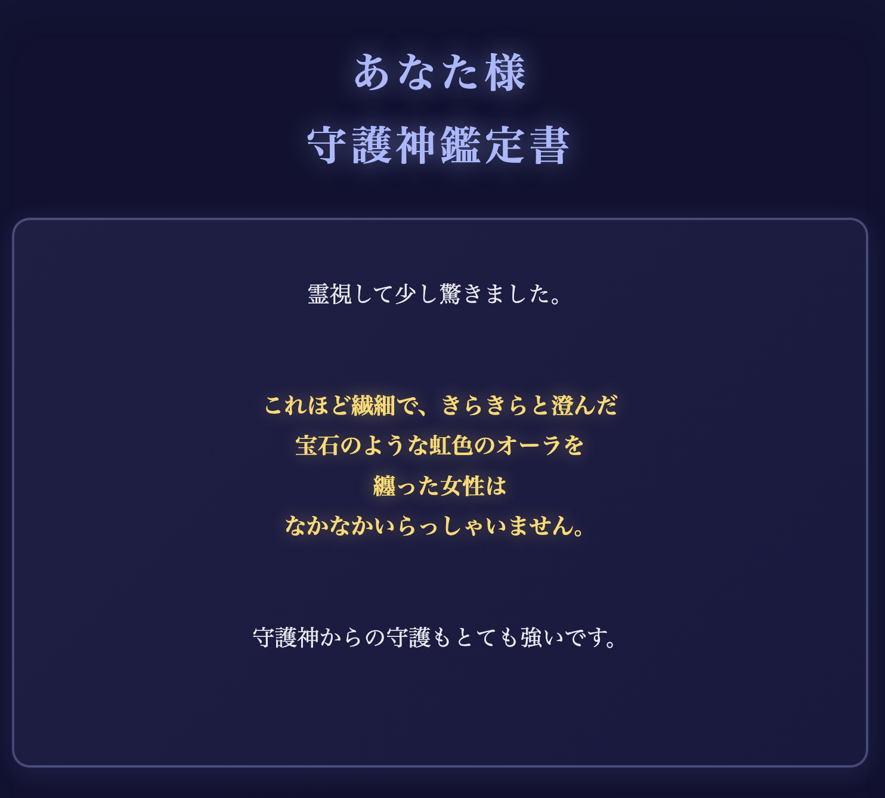
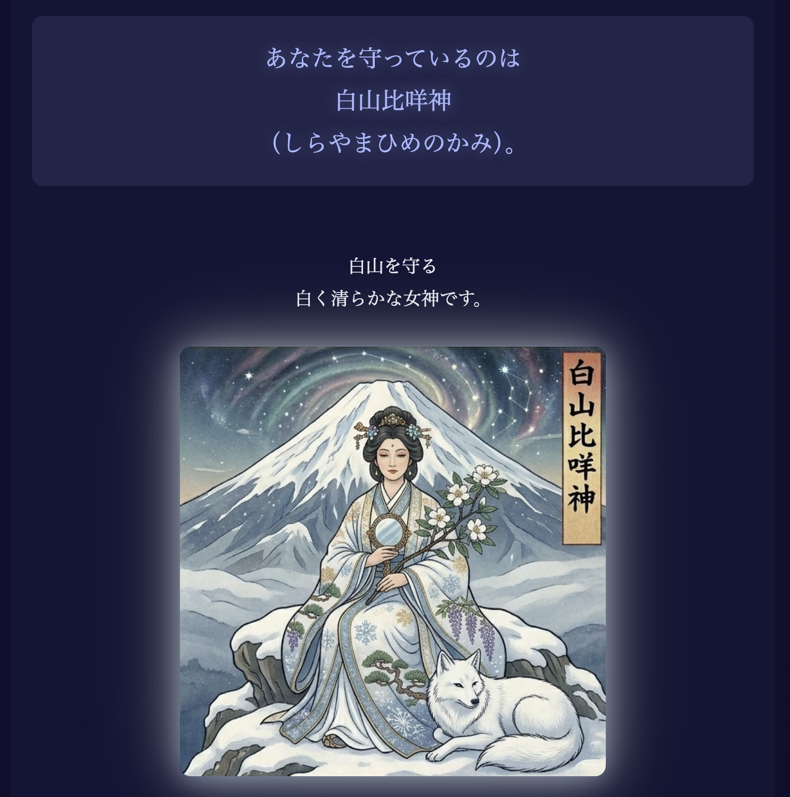
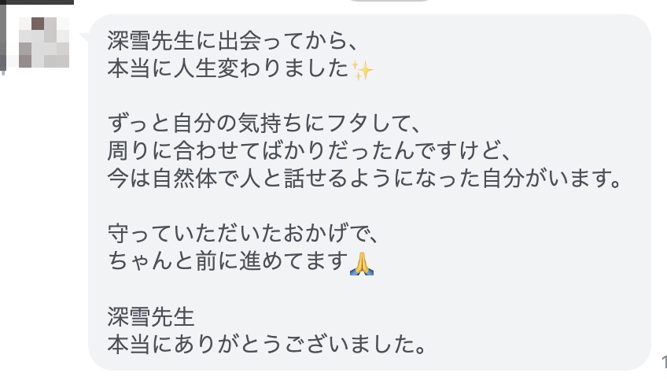
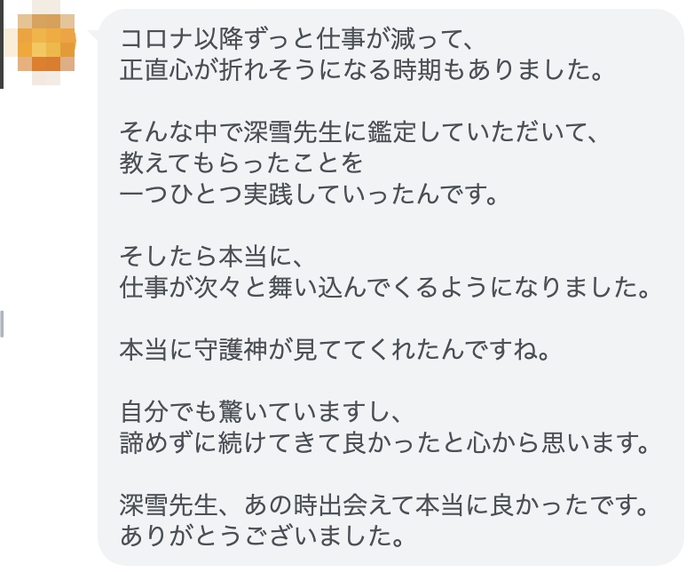
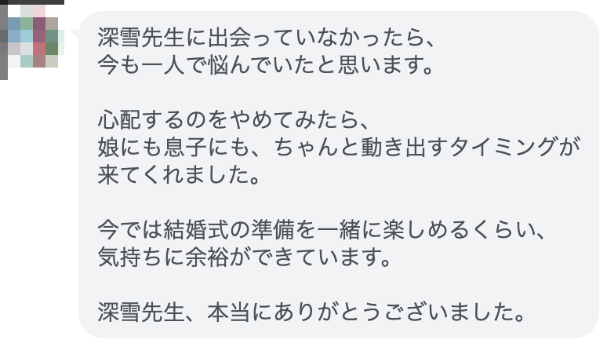

こんにちは、
深雪と申します。
このたびは、
大切な情報をお預けくださって
ありがとうございます。
これから
あなたのオーラの色、
守ってくださっている守護神、
あなたという人間の本質を
視てまいります。
霊視が完了して
文章を書き上げるまでに
大体24〜48時間かかります。
1人1人丁寧に鑑定していますし、
沢山の事をあなたに伝えたいので
結構な文量になります。
楽しみにお待ちください。


鑑定に入る前に、
すこしお伝えしたいことがあります。
私がなぜ霊視鑑定を
やっているのか。
守護とは、
そもそも何なのか。
どうすれば運命を
変えることができるのか。
どうすれば現状を
より良くできるのか。
これがわかった上で
鑑定文を読むと
それだけであなたの運勢は
上向きになります。
自分に必要だと
思う部分だけでも
大丈夫です。
ゆっくりお読みください。
京都に、表には出ない家があります。
奈良の世から続く守護の家系。
代々、要人・政治家・著名人の
霊的守護を担ってきました。
私は後継者として生まれ、
神職に就き、霊力を磨いてきました。
ただ、ずっと違和感がありました。
守護される側は、
いつも選ばれた人間だけ。
政治家、財界人、著名人——
社会を動かす人たちは、
金と権力で守護を手に入れてきました。
だから彼らは、
スキャンダルがあっても生き残る。
失敗しても復活する。
なぜか助けが入る。
一方で、
身近な人がどれだけ苦しんでいても、
家は動きませんでした。
私が異を唱えた結果は⋯追放でした。
「遠くの大きな幸せより、
身近な小さい幸せ」
これが、私の座右の銘です。
家が要人にだけ使ってきた守護の知識を
今、初めて外に出します。
生きているすべての人に、
守護のオーラは存在しています。
霊的な盾のようなもの。
見えないけれど、確かにあるものです。
守護のオーラには
属性や色があります。
簡単にいうと
火・水・木・金・土。
燃え盛る業火のようなオーラもあれば
ろうそくのように穏やかなオーラもあります。
そして、それぞれに
得意、苦手があります。
例えば火のオーラを持つ人は、
外からの悪意を跳ね返す力が強い。
でも自分の内側からくる不安には、
意外と弱い。
同じ事をぐるぐる考えては
答えが出ないことにまた悩む。
水のオーラを持つ人は、
人の感情を包み込む力がある。
どんなことがあっても
広く受け止める
まるで大海のような心の持ち主。
でも流されやすく、
知らないうちに他人の疲れを
引き受けていることがあります。
なぜかあなただけが疲れ果てたり、
他の方が罹らない病気になりやすいのは
実は守護のオーラの属性と
深く関係しています。
日本に生まれ、育つ人なら
何らかの神様の守護を得ています。
守護してくれる神様は、
オーラの属性と密接に関わります。
例えば、火のオーラを持つ方は、
火産霊神のような
火を司る神々の守護を、
木のオーラを持つ方は、
木之花咲耶姫のような
木や花を司る神々の守護を
受けていたりします。
日本人が
節目節目に神社を訪れるのは、
偶然ではありません。
初詣、お宮参り、七五三、
厄払い、合格祈願。
理由をうまく説明できなくても、
私たちは自然と
神社に足を運んできました。
それは、
私たちが神々の守護を受けている事を
無意識で認識していて、
感謝の作法が
血の中に組み込まれているから。
生まれた瞬間から
その神様の守護は始まっていて、
一生涯、途切れることはありません。
自分の守護神を知るということは、
自分が今日まで
どなたに守られてきたのかを
知るということでもあります。
次に、
守護霊は、
誰にでもいるわけではありません。
先祖に縁がある人、
特定の土地に深く根ざした家系の人、
偶発的な出来事がきっかけで
つくことがあります。
また、
守護霊は離れることもあります。
もう守護が必要ないほど守られている場合。
守護する存在に背いた場合。
守護しすぎて疲れ果ててしまった場合。
さらに、守護霊が一時的に
力を失う時期もあります。
月に一度、年に一度、
十二年に一度、一生に一度。
そのタイミングで
「なぜかこの時期に⋯」
という出来事が起きることがあります。
今の世界を見てください。
戦争、争い、
むき出しの悪意が
ニュースを通じて毎日流れてきます。
意識していなくても、
守護のオーラは少しずつ削られています。
些細なことで涙が出てしまったり、
普段だったら耐えられる言葉に
心がボロボロにされてしまったり、
何かをしなければいけないのはわかるのに
何をすればいいのかが
わからなくなってしまったり⋯
これは、
あなたのせいではありません。
守護のオーラが悪意によって
削られているからなんです。
守護が薄いままでは
何をしても崩されてしまいます。
どれだけ仕事を頑張っても。
どれだけ節約しても。
どれだけ関係を修復しようとしても。
積み重ねた努力が、
片っ端から崩されていく——
そんな感覚があるとしたら、
それは守護の状態が原因です。
だから、順番があります。
努力する前に、守護を整える。
守護が整った瞬間から、
すべてが動き始めます。
守護を整える前に頑張るのは、
穴の空いた器に
水を入れ続けるようなもの。
努力しても全て
水の泡と消えてしまうんです。
そして、いちばん最初は
「自分の守護の状態を知ること」です。
これを知らないまま動いても、
どこに力を入れればいいのか
わかりません。
まず、知ることから。
そこから動き出した方を、
私はたくさん見てきました。
夫のモラハラで離婚調停中。
人の顔色を伺うクセがついて
楽しく話すこともできない状態でした。
鑑定し、守護の力を授けたあとは
離婚調停が無事成立。
取るものはしっかりと取れました。

コロナ以降、仕事が激減して3年以上。
何をやってもうまくいかず、
貯金も底をつきそうな状態でした。
守護の力を授けたあとは、
5年ぶりの大口案件が舞い込み、
コロナ前の8割まで
仕事が戻ってきました。

娘が離婚して帰宅、
息子も未婚のまま。
子どもたちの将来が不安で、
夜も眠れない日々でした。
守護の力を授けたあとは、
娘さんに新しい出会いが。
息子さんも初めて彼女を
連れてきました。

私からお届けするのは、
丁寧に丁寧に霊視して
わかりやすい言葉で
お伝えします。
まもなく、
あなたのオーラと守護神を
お届けします。
読み終えたその瞬間から、
あなたの中で
静かに何かが動き始めますが
安心して身を委ねてくださいね。